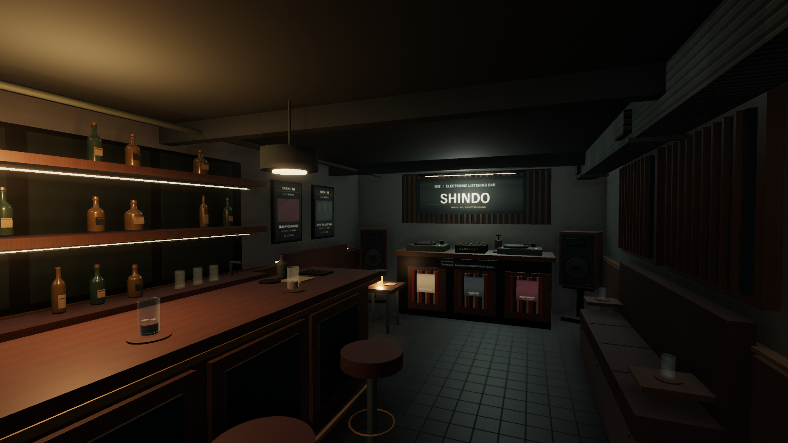

深度 / B1 · SELECTED SOUND
SHINDO
An intimate electronic listening bar. Actual WebGL captures at 21:00, seed 8412. Four comparisons retain the camera, lens, weather and simulation timestamp. Images open at full resolution.

Final listening-room composition.
Before / after
Entrance, transition and seating
Playback-driven detail
Six seconds of actual canvas recording: rotating records, restrained mixer meters and the current track display. The video is silent; personal music files are not included in the recording. Music playback and room acoustics are available in the running game.
Short change and validation notes · Open Shinmachi · Local music setup